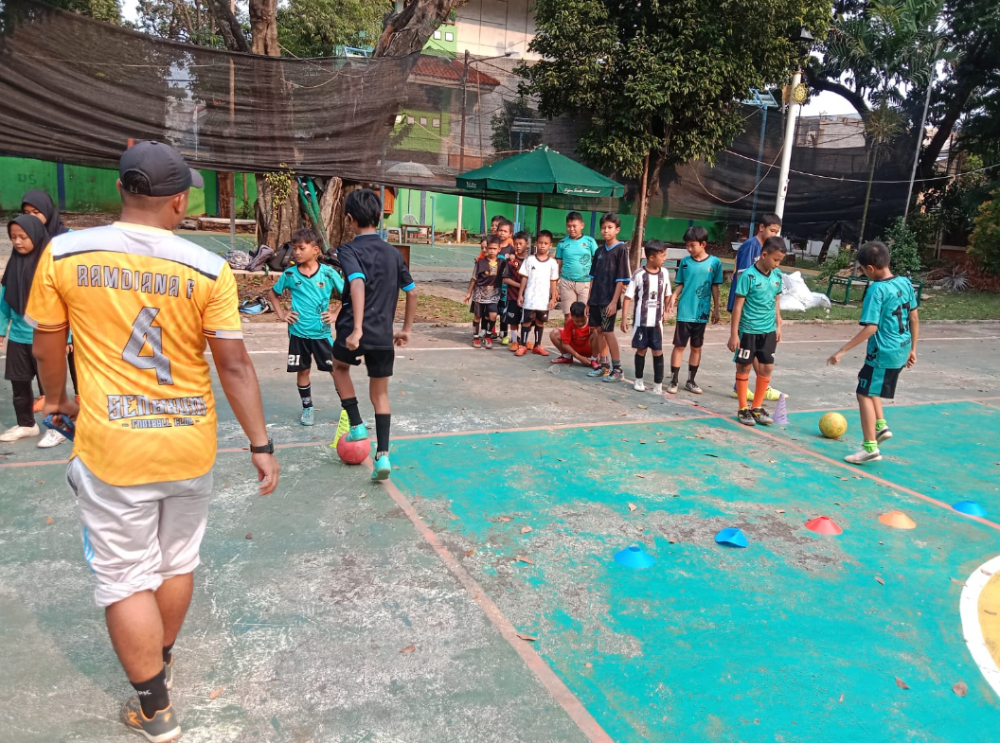

Profil Sekolah
Sejarah SDN 05 BINTARO PAGI
SDN BINTARO 05 PAGIadalah sekolah dasar negeri yang berlokasi di Jl. Komp. Ikpn Rt.003/04, Bintaro, Kecamatan Pesanggrahan, Kota Jakarta Selatan. Berdiri sejak 1 Juli 1977, sekolah ini memiliki NPSN 20103139 dan diakui sebagai sekolah berkualitas dengan akreditasi A berdasarkan SK No. 752/BAN- SM/SK/2019 yang dikeluarkan pada 9 September 2019. Dengan mengedepankan pendidikan berkualitas, sekolah ini menawarkan pendidikan sehari penuh selama 5 hari dengan fasilitas lengkap dan tenaga pengajar profesional yang berdedikasi tinggi. Selain itu, SD Negeri Bintaro 05 Pagi dilengkapi dengan akses internet yang mendukung proses belajar mengajar serta listrik dari PLN yang memastikan kegiatan belajar berjalan lancar tanpa hambatan.
Dengan luas tanah mencapai 1.920 meter persegi, sekolah ini menyediakan ruang kelas yang nyaman dan berbagai fasilitas pendukung seperti lapangan olahraga, perpustakaan, dan ruang komputer. Akses internet berkecepatan tinggi juga tersedia untuk mendukung pembelajaran berbasis teknologi, menjadikan siswa lebih cakap dalam penggunaan teknologi informasi. Lingkungan belajar di SD Negeri Bintaro 05 Pagi sangat kondusif dan menyenangkan, menciptakan suasana yang ideal bagi perkembangan akademis maupun karakter siswa. Sekolah ini benar- benar merupakan pilihan tepat bagi orang tua yang menginginkan pendidikan berkualitas dan pengalaman belajar yang optimal bagi putra-putrinya.
Selain kurikulum yang terstruktur dengan baik dan disusun sesuai dengan standar nasional pendidikan, sekolah ini juga memiliki tenaga pengajar yang berpengalaman dan profesional, yang selalu siap mendampingi dan membimbing siswa dalam proses belajar mengajar. Dengan segala keunggulan yang dimiliki, SD Negeri Bintaro 05 Pagi tidak hanya berkomitmen untuk mencetak siswa yang cerdas secara akademis, tetapi juga siswa yang berkarakter, kreatif, dan siap menghadapi tantangan di masa depan. Siswa yang lulus dari sekolah ini diharap
mampu menjadi generasi yang tangguh dan berdaya saing tinggi di tengah globalisasi.
Struktur Organisasi SDN BINTARO 05 PAGI
Struktur organisasi adalah kerangka atau susunan formal yang menggambarkan bagaimana tugas, wewenang, tanggung jawab, dan hubungan antar individu atau bagian-bagian dalam sebuah organisasi diatur untuk mencapai tujuan yang ditetapkan. Struktur ini menunjukkan hierarki atau tingkatan dalam organisasi, siapa yang melapor kepada siapa, dan bagaimana aliran komunikasi dan pengambilan keputusan terjadi.

Visi dan Misi
A. Visi
Mewujudkan Satuan Pendidikan berkualitas dengan lulusan yang cerdas bertaqwa dan berakhlakul karimah.
B. Misi
Dalam upaya mengimplementasikan visi sekolah, SDN Bintaro 05 Pagi menjabarkan misi sekolah sebagai berikut:
a. Mengembangkan budaya literasi Mengembangkan strategi pembelajaran yang menantang, menyenangkan, komunikatif, tanpa takut salah dan demokratis
b. Mengembangkan sikap dan prilaku religius di lingkungan dalam dan luar sekolah
c. Melaksanakan ibadah secara berjamaa
d. Memelihara lingkungan sekolah aman, nyaman, hijau, bersih dan ramah, mengembangkangkan sikap prilaku hidup bersih dan sehat
e. Mengembangkan kreativitas dan inovasi budaya sekolah
f. Mengupayakan pemanfaatan waktu belajar, sumber daya fisik dan manusia, agar memberikan hasil yang terbaik bagi perkembangan peserta didik
g. Menanamkan kepedulian sosial dan lingkungan, cinta damai, cinta tanah air, semangat kebangsaan dan hidup demokratis
Fasilitas Sekolah
|
Koperasi SD Negeri Bintaro 05 Pagi adalah koperasi sekolah yang bertujuan membantu kebutuhan siswa dan guru. Koperasi ini menyediakan alat tulis, buku, dan perlengkapan lainnya dengan harga terjangkau. Selain membantu anggota, koperasi juga mengajarkan siswa tentang gotong-royong dan dasar-dasar pengelolaan keuangan. |
|
Lab komputer SD Negeri Bintaro 5 adalah fasilitas belajar teknologi bagi siswa. Di sini, siswa belajar keterampilan dasar komputer, seperti mengetik, menggambar, dan mengenal internet secara aman. Lab ini mendukung pembelajaran digital dan membantu siswa lebih siap menghadapi teknologi di kehidupan sehari-hari. |
|
Lapangan SD Negeri Bintaro 5 adalah area terbuka yang digunakan untuk berbagai kegiatan olahraga dan upacara sekolah. Lapangan ini memungkinkan siswa untuk beraktivitas fisik, seperti sepak bola, bola basket, dan senam, serta mendukung perkembangan kesehatan dan kerjasama antar siswa. |
|
Ruangan kelas SD Negeri Bintaro 5 adalah tempat belajar siswa yang dilengkapi meja, kursi, papan tulis, dan alat pembelajaran. |
|
Masjid SD Negeri Bintaro 05 Pagi adalah tempat ibadah yang berada di lingkungan sekolah dasar tersebut. Masjid ini digunakan untuk kegiatan keagamaan seperti salat berjamaah, pengajian, dan kegiatan Islami lainnya, terutama bagi siswa dan guru. |
|
UKS SD Negeri Bintaro 05 Pagi adalah ruang kesehatan di sekolah yang digunakan untuk memberikan pertolongan pertama, pemeriksaan kesehatan, dan edukasi hidup sehat bagi siswa. |
Ekstrakurikuler
|
Marching Band SD Negeri Bintaro 5 adalah kelompok musik yang terdiri dari siswa yang memainkan alat musik tiup dan perkusi. Mereka tampil dalam acara sekolah, seperti upacara dan perayaan, untuk memeriahkan suasana dan mengembangkan keterampilan musik serta kerjasama tim. |
|
Tari SD Negeri Bintaro 5 adalah kegiatan seni yang melibatkan siswa untuk belajar dan menampilkan tarian tradisional maupun modern. Melalui tari, siswa dapat mengembangkan kreativitas, disiplin, dan rasa kebersamaan, serta melestarikan budaya Indonesia. |
|
Pencak Silat di SD Negeri Bintaro 5 adalah kegiatan ekstrakurikuler yang melatih siswa seni bela diri tradisional Indonesia, meliputi teknik dasar, kuda-kuda, dan gerakan bela diri untuk meningkatkan disiplin, ketahanan fisik, dan kecintaan terhadap budaya lokal. |
|  |
Futsal di SD Negeri Bintaro 5 adalah kegiatan olahraga rutin yang diadakan untuk siswa, bertujuan meningkatkan keterampilan, kerja sama tim, dan kebugaran fisik. Lapangannya memadai, dan siswa dilatih oleh guru olahraga berpengalaman. |
|
Marawis di SD Negeri Bintaro 5 adalah kegiatan seni musik Islami yang melibatkan alat musik seperti rebana. Kegiatan ini biasanya dilakukan oleh siswa untuk melatih kreativitas, kekompakan, dan mengenalkan budaya Islami. |
|
Melukis di SD Negeri Bintaro 5 adalah kegiatan seni yang mengajarkan siswa untuk mengekspresikan kreativitas melalui gambar dan warna. |
|
Pramuka di SD Negeri Bintaro 5 adalah kegiatan ekstrakurikuler yang bertujuan untuk membentuk karakter siswa yang disiplin, mandiri, kreatif, dan memiliki semangat kebersamaan. |